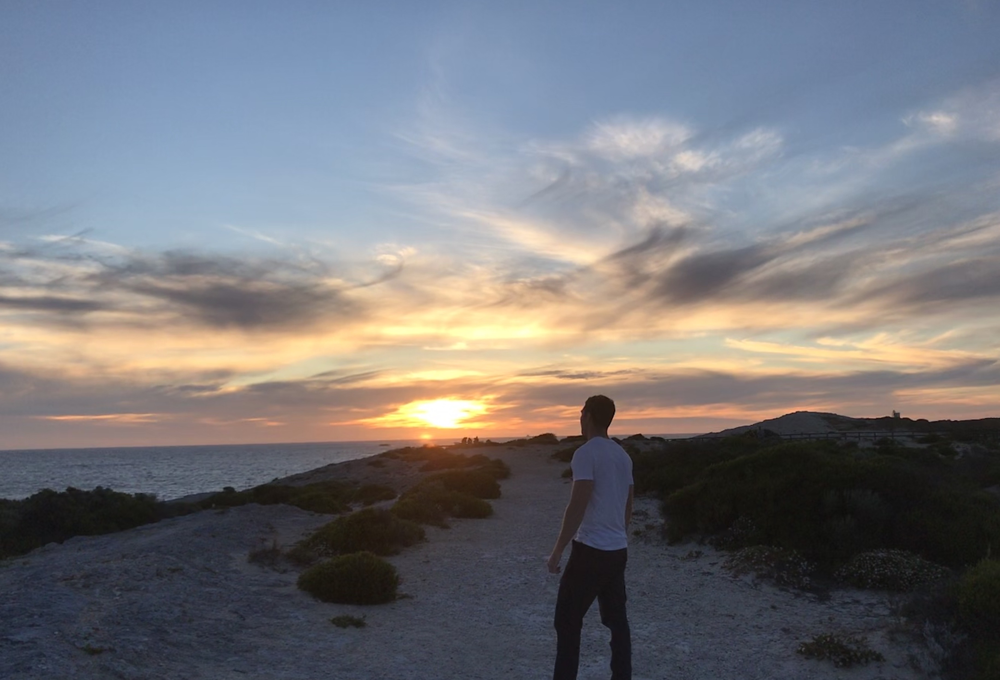
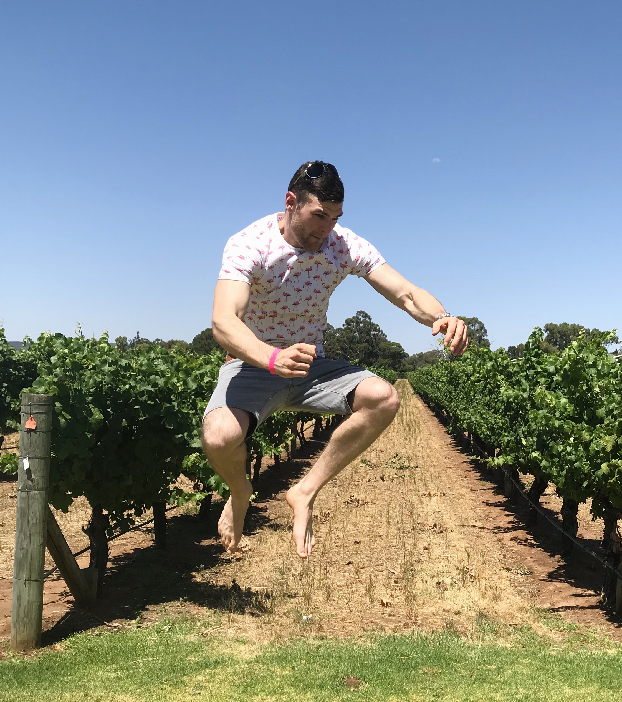
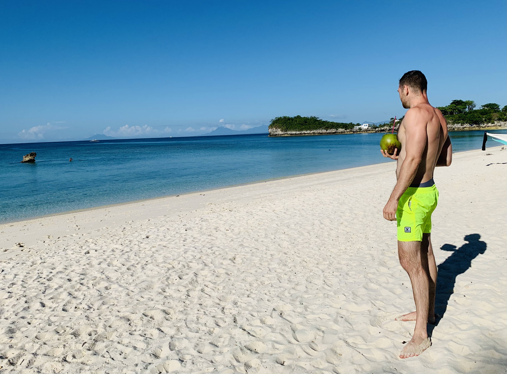
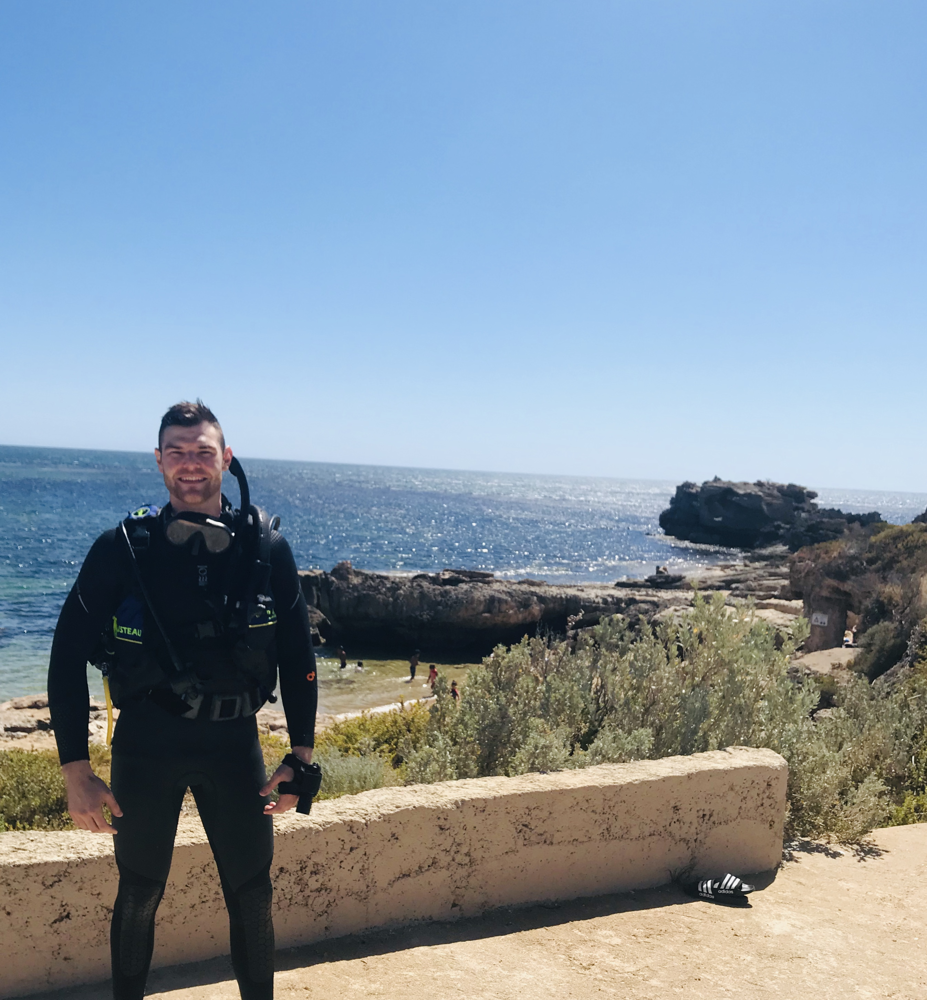
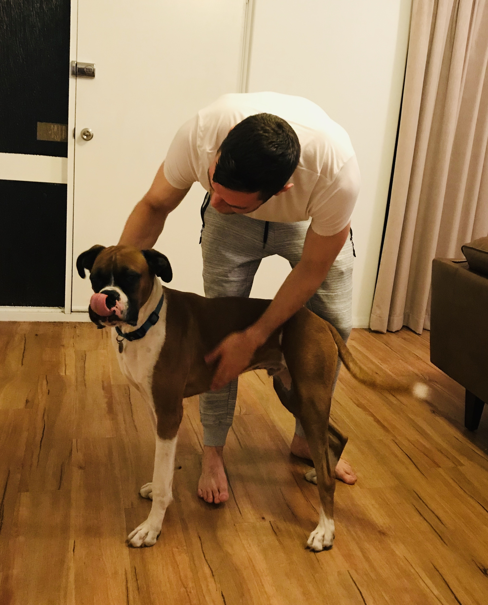
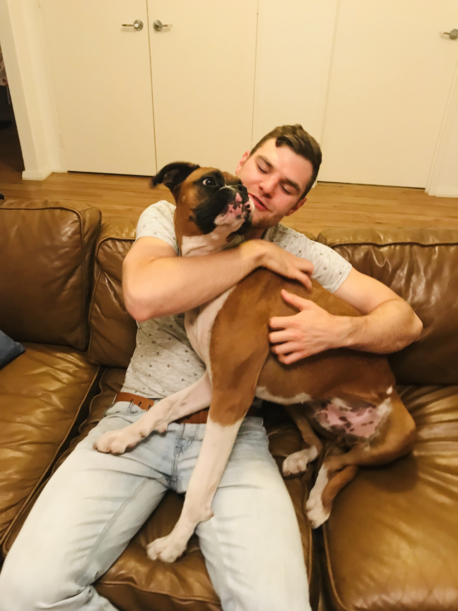
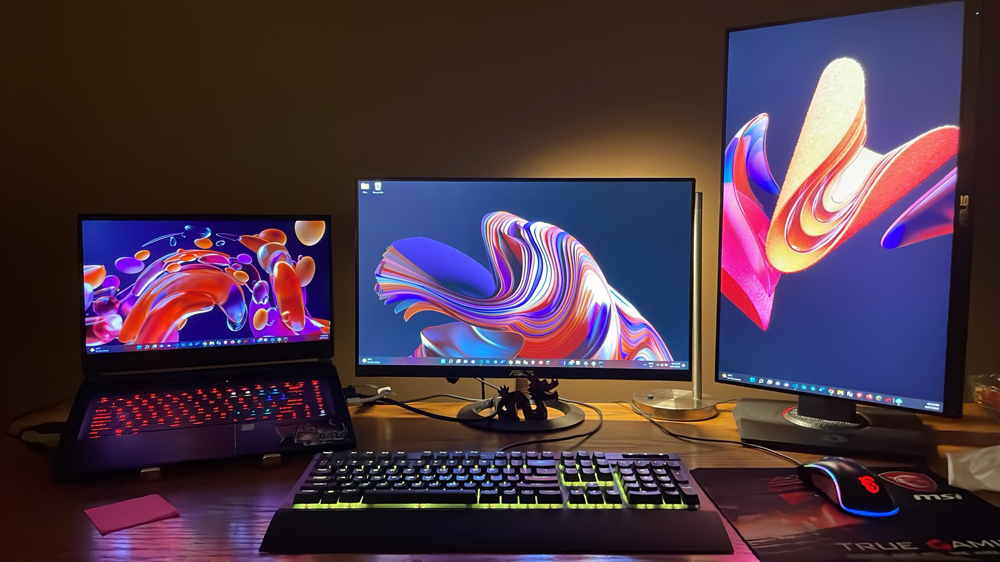

Wild moments beat generic filler.
Some images already carry the whole memory on their own.
Explore
Travel, diving, wildlife, and real moments that add texture to the work without turning the site into a random feed.
Categories
Featured moments
Some images already carry the whole memory on their own.
When a moment has range, the page does not need to over-explain it.
The outside world should add range to the brand, not noise.
Photo reel
A rotating pass through real moments so the page feels curated, alive, and personal without turning into a giant feed dump.












Gallery layout
Reflection strip
Real experiences keep the brand from feeling flat, over-designed, or overly online.